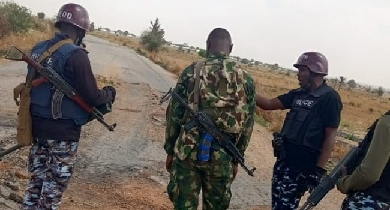

Troops Repel Terrorists’ Attacks In Zamfara, Recover Weapons In Kaduna

Troops from the Joint Task Force North West, Operation Fansan Yamma, repelled successive attacks on communities in Anka Local Government Area of Zamfara State on November 14, 2026. The Theatre Command said armed men on motorcycles attacked Wuya and Yarzabia, but troops from Sector Two forced them to retreat with superior firepower. The attackers regrouped and launched another assault, which troops also repelled while holding their positions.
Reinforcements later extended operations to neighbouring communities, and patrols continued to deter further incursions. The operation’s Air Component deployed a combat aircraft to support ground forces. The Theatre Command said the aircraft spotted terrorists moving a large herd of suspected rustled cattle away from the affected communities and carried out multiple airstrikes, reportedly neutralising scores of attackers.
In Kaduna State, Sector One troops conducted a fighting patrol near farmlands in Aguba Village, Kajuru Local Government Area, following intelligence about suspected terrorist activity. They exchanged fire with suspects, killing one, while others fled. A search of the area turned up two fabricated rifles, a mobile phone, substances suspected to be cannabis and other illicit drugs, and recharge cards.
In a separate incident, troops deployed along Buruku-Kaduna Road engaged armed suspects after receiving reports of their movement. The suspects fled into a nearby forest, leaving behind two motorcycles, which troops recovered. Pursuit and search operations were continuing to prevent them from regrouping. The Theatre Command praised the troops and urged the public to provide security agencies with timely, credible information.
Source: Channels TV